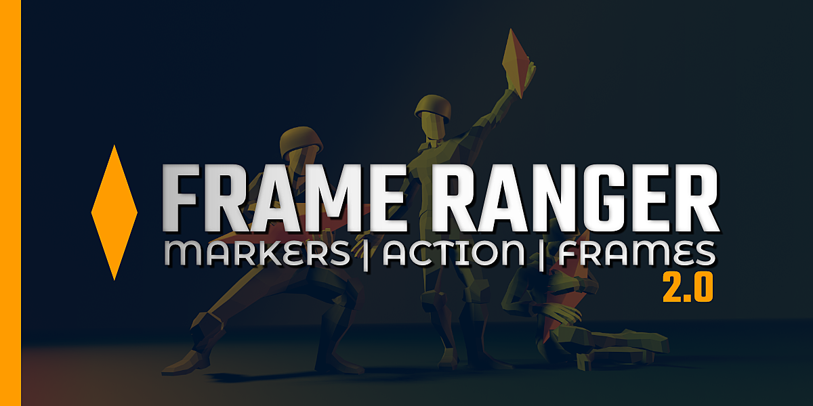
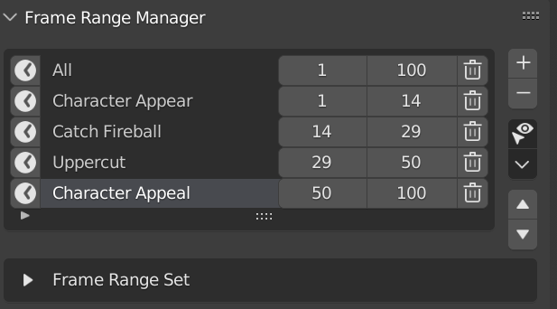
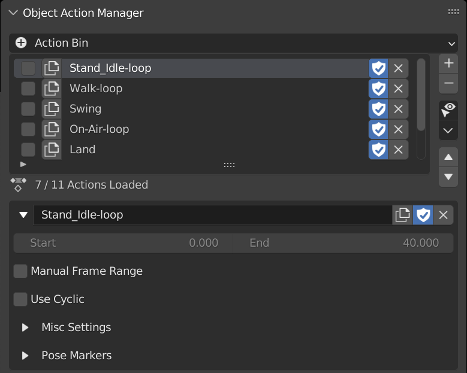
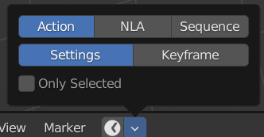

Frame Ranger
Frame Ranger is a Blender Add-on that helps manages Object’s Action, Timeline Markers, Frame Range and more.
This Add-on Consist of Multiple Sections, You can Turn On / Off Based On Your Needs in the Preferences
Frame Range Manager
Stores Frame Range So That you can Switch Frame Ranges Easily
Object Action Manager
Stores Actions in Object so that you can associate actions to a object, and switch the object’s action easily. It Also Comes With Many Other Feature that can be useful
Action Bin
List Out All the Actions in the Blender File, and helps managing it by providing some basic feature to work on them.

Timeline Markers Manager
Presents Timeline Markers In A list form as well as adding some operators that make timeline markers more useful, by allowing it to be easily created, bind to camera, or jump to marker.

Action Baker
A Tool that Helps Bake Animation From Control Rig to Deform Rig using CGDive’s Workflow.
This Feature is Made to Work Together with Game Rig Tools and is similar to Game Rig Tool’s Action Bakery.
While It might have other application, this tool is Specifically Made for CGDive workflow, but the Frame Ranger way.

Note
The Difference between Game Rig Tools Action Bakery and Frame Ranger’s Action Baker is that it takes advantage of the Object Action Manager in Frame Ranger For Better Action Organization.
Framerate Remapper
A Destructive Tool that Remaps all the keyframes in this scene to different frame rate

Auto Frame Range
A Timeline Utility that Automatically Updates and Set Scene’s Frame Range to Match Action, NLA, or Sequencer
Animation Player
Adds the Animation Player Buttons (Play, Pause etc…) and Frame Range Settings from Timeline Editor to Dopesheet, Graph Editor, NLA Editor and Video Sequencer